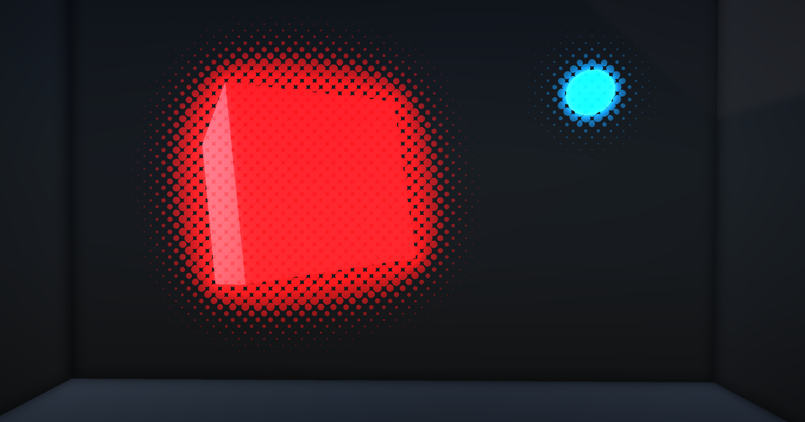
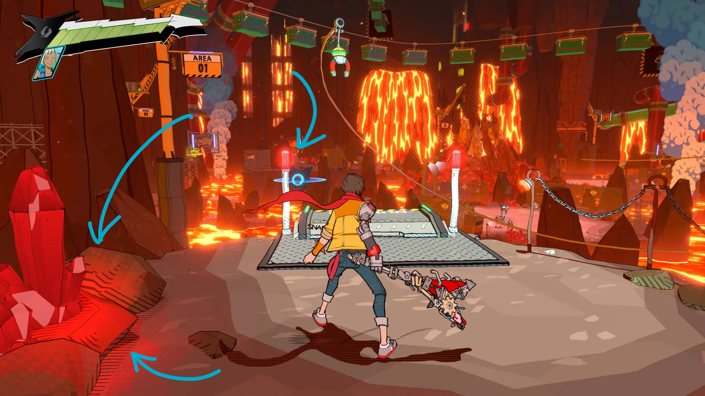

Stylized Bloom and SSAO
| Created |
|---|
Implementation
Having control over SSAO and Bloom makes it easier to achieve a stylized, comic book-like aesthetic to a game.
{kind=link}

Hi-Fi Rush achieves this by applying a halftone effect to lights (baked lighting and bloom) and a crosshatch effect on shadows (baked Ambient Occlusion). I had already done a kind of post-processing of baked lighting in the past, and wanted to tackle processing Unity’s default Bloom and SSAO implementations
Bloom
Digging around the Frame Debugger in Unity, I realized the Bloom effect created a global texture that was then used in the Post Processing stack. The texture itself is called _Bloom_Texture, and it isn’t defined by default in Shader Graph, so I made an include file that defined the global texture inside the shader graph and a custom function for sampling the bloom texture.
TEXTURE2D(_Bloom_Texture);
SAMPLER(sampler_Bloom_Texture);
void SampleBloom_float(float2 uv, out float4 output)
{
#if SHADERGRAPH_PREVIEW
output = 1;
#else
output = SAMPLE_TEXTURE2D(_Bloom_Texture, sampler_Bloom_Texture, uv);
#endif
}This allowed me to create a subgraph with this custom function so that this bloom could be easily sampled in the future if needed. The effect itself was trivial to create, It was a halftone/crosshatch pattern applied to a gradient.
The big problem with this is that both the default unity bloom and my custom one were present at the same time, which resulted in a lack of artistic control over the bloom.
I solved this by setting the bloom’s intensity to 0 in the post processing pass, since the bloom texture had already been created and I could sample and apply it later on in the pipeline, with my own stylizations.

Ambient Occlusion
Ambient Occlusion was very similar, since _ScreenSpaceOcclusionTexture is already defined and used in the Lit Shadergraph, I just created the custom function and subgraph to sample inside the full screen shader and it was done.
void SampleSSAO_float(float2 uv, out float4 output)
{
#if SHADERGRAPH_PREVIEW
output = 1;
#else
output = SAMPLE_TEXTURE2D(_ScreenSpaceOcclusionTexture, sampler_ScreenSpaceOcclusionTexture, uv);
#endif
}